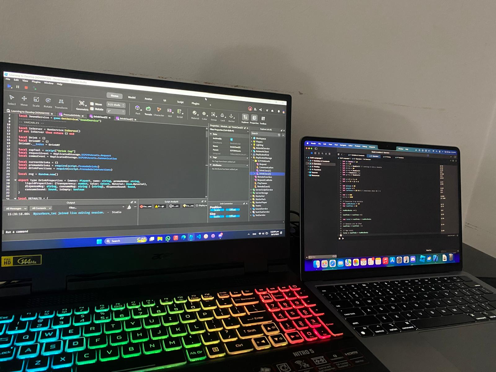

Hi, I’m Hrithik!
Student Developer 💻
I'm a student from Dunman Secondary School with a strong interest in software development, technology, and problem-solving. I enjoy building projects that challenge me to learn new skills, from game development in Roblox Studio to web development and programming.
"A good programmer is someone who always looks both ways before crossing a one-way street.” ~ Doug Linder

At a Glance I am:
• A Student
Dunman Secondary School
• A Developer
Roblox & Web Development
• A Leader
VP of Infocomm Club & Tech Champ
• A Learner
AWS & Swift Accelerator
• A Creator
Boundless Civitas
• An Achiever
DOC 2025 Best Presentation Recipient
More about Me
I'm a secondary school student with a strong interest in software development, game design, and technology. A lot of my time outside the classroom is spent building projects, experimenting with new ideas, and learning how large systems work behind the scenes.

School Involvement
Getting Into Tech
My interest for technology and coding, started in primary school when I got interested in learning about programming and computers in general. I was then introduced to Scratch, a visual programming language. I found it fascinating how I could create my own games and animations with just a few blocks of code. From there, my interest in coding only grew stronger, and I started exploring other programming languages and platforms, particularly Code.Org, where I learned the basics of programming using block code and developed my problem-solving skills.

Secondary School Infocomm Club
Wanting to develop my interest further, I joined the Infocomm Club in secondary school. We started off by training for a competition known as WRO Future Innovators where we have to build a robot to solve a real-world problem. This forced me to think about not just the technical aspects, but also the creative and collaborative elements of problem-solving.

In Sec 3, I was appointed as the Vice President of the Infocomm Club, where I helped organized events and logistics in the club to make sure it continued to thrive. There were many ups and downs, but I learned a lot about leadership and teamwork through the experience. Overall, it was a rewarding experience and I'm glad I had the opportunity to be part of such a great club. I even managed to get a leadership award out of it!


Beyond the Classroom
I also joined numerous programmes such as AWS Accelerator & Swift Accelerator, both of which provided me more formal platforms for learning Python and Swift respectively.
Secondary school was also the time when I developed the interest to make Roblox games. In fact, I am currently working on one right now after having spent many hours learning game development in a course.
Want to learn more about what I do? Read My Articles below!
NOTE: Some articles are still in progress and are greyed out for the time being. Click on the view all articles button at the bottom of the page to see more completed ones.
Featured Articles & Projects

Boundless Civitas
Building a city-state management game on Roblox while learning software architecture and game systems.

App Development with Swift Certified User
Awarded for passing the App Development with Swift Certified User certification exam.
Infocomm Club & Leadership
My experience as member & Vice President of the Infocomm Club.